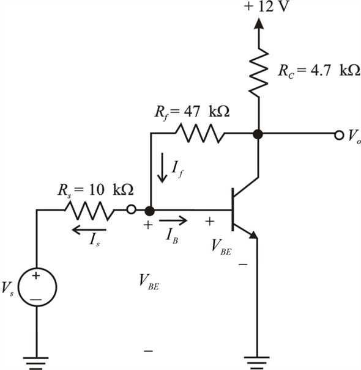
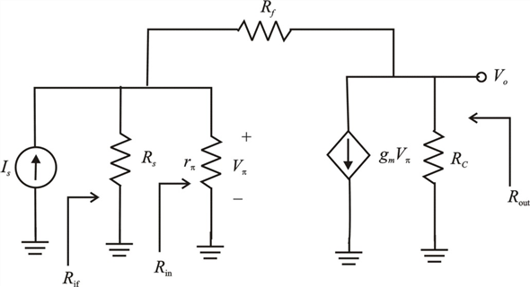
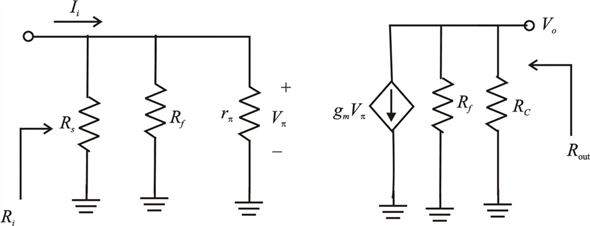

Step 1:
Refer to the circuit diagram of common emitter BJT amplifier that employs shunt-shunt feedback amplifier in Figure P10.55 in the textbook.
The amplifier employs shunt-shunt feedback; and the feedback resistor  senses the output voltage,
senses the output voltage,  and provides a feedback current to the base node.
and provides a feedback current to the base node.
Draw the modified circuit of the figure.

Figure 2
Step 2:
(a)
Calculate the value of the current.
Substitute 0.7 for  and for
and for  .
.
Step 3:
Apply Kirchhoff’s voltage law to the output loop of the circuit in Figure 2.
Substitutefor ,
,  for
for and for
and for  in
in 
…… (1)
Step 4:
Apply Kirchhoff’s current law at the collector and base loop for the circuit in Figure 2.

Substitute forand  for
for .
.

 …… (2)
…… (2)
Step 5:
Subtract equation (2) from equation (1).
Recall equation (1).
Substitute forin equation (1).
Step 6:
Calculate the dc collector current.
Substitute for and
and  for
for in
in .
.
Therefore, the dc collector current of the BJT is .
Step 7:
(b)
Draw the small signal equivalent circuit.

Figure 3
Step 8:
(c)
Draw the A circuit for the amplifier.

Figure 4
Step 9:
Calculate the trans-conductance,  .
.

Substitute for  and
and  for
for  .
.
Step 10:
Calculate the value of the resistance,  .
.

Substitute  for
for and for
and for .
.
Step 11:
Calculate the gain of the circuit .
.
Substitutefor , for
, for , for
, for ,
,  for
for and for
and for  in
in .
.
Therefore, the gain of the amplifier is .
Step 12:
Calculate the input resistance

.
Substitute for
for ,
,  for
for and
and  for
for  in
in .
.
Therefore, the input resistance of the amplifier is .
of the amplifier is .
Step 13:
Calculate the output resistance.
Substitute for
for , for
, for in.
in.
Therefore, the output resistance of the amplifier is .
of the amplifier is .
Step 14:
(d)
Calculate the feedback factor .
.
Substitute for
for in
in .
.
Therefore, the feedback factor is .
is .
Step 15:
Calculate the loop gain  .
.
Therefore, the loop gain of the amplifier is .
of the amplifier is .
Calculate the amount of feedback .
.
Therefore, the amount of feedback is .
is .
Step 16:
(e)
Calculate the gain with feedback, .
.

Substitutefor andfor
andfor  in
in 
Therefore, the gain with feedback  of the amplifier is .
of the amplifier is .
Calculate the input resistance with feedback .
.

Substitutefor andfor
andfor in
in 
Therefore, the input resistance with feedback  of the amplifier is
of the amplifier is  .
.
Step 17:
Calculate the output resistance with feedback, .
.
Substitute for
for andfor
andfor in
in
Therefore, the output resistance with feedback of the amplifier is .
of the amplifier is .
Step 18:
Calculate the input resistance,

.
Therefore, the input resistance of the amplifier is .
of the amplifier is .
Step 19:
Calculate the output resistance .
.
Therefore, the output resistance  of the amplifier is.
of the amplifier is.
Step 20:
(f)
Calculate the voltage gain,  .
.
Substitutefor and
and for
for in
in 
Therefore, the voltage gain of the amplifier is .
of the amplifier is .
Step 21:
If the loop gain is very large, then the gain with feedback is as follows:
is as follows:
Substitute for  in
in .
.
Step 22:
Calculate the voltage gain .
.

Substitutefor and
and for
for in
in  .
.
Therefore, the voltage gain of the amplifier for very large loop gain is .